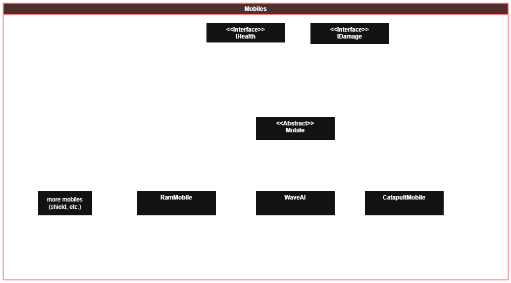
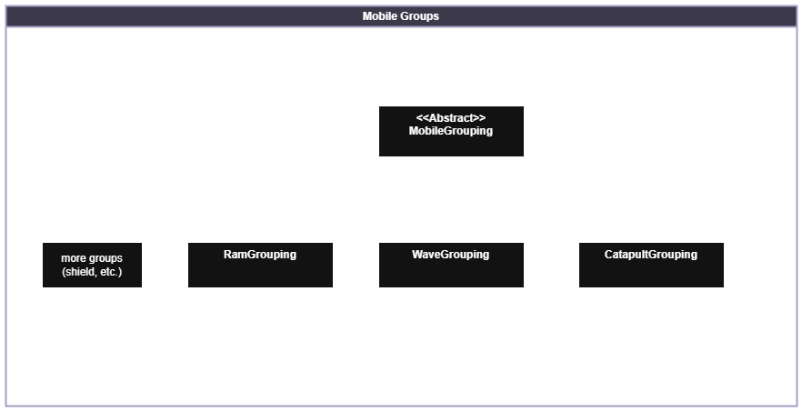
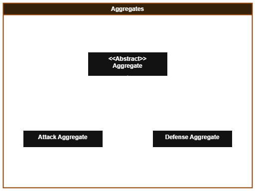
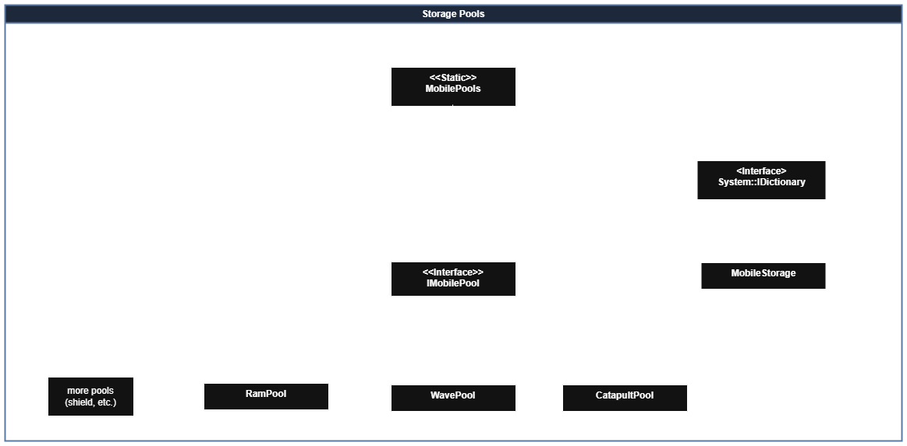
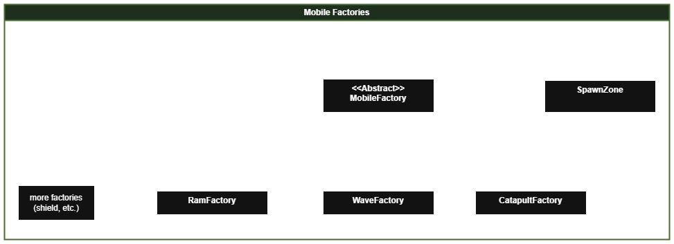

Rise from Ruin is a 3D character action game being developed for Game Studio 3. In the game, you play as a big monster, however your role is swapped from traditional monster gameplay. You are the protector of the city, and must defend it from waves of oncoming enemies. You are an unstoppable force, but there is only one of you.
- Lead the team of programmers and technical designers
- Organized and lead programmer meetings
- Developed the mobile AI system for the game
- Developed various other systems in the game
- Merged GIT branches and created builds
- Communicating with other disciplines with engine work and GIT
- Bug fixing and optimization
One of the systems that I worked on for this game was the mobile AI system. This system controlled the various aspects of the AI units that would move around the game.
The base mobile class is used to derive all of the other mobile types. This includes both enemy mobiles as well as allies. The mobile class is an abstract class that is very adaptable to work for all mobile types. This mobile class implements the IHealth and IDamage interfaces. These interfaces are used to provide a unified way to deal damage in the game. This allows for other objects in the game to deal damage to the mobiles, including both the player and other mobiles.
The mobile groups class is used to create different types of mobile groups. These groups are what decides the decision making of the AI agents. Each group stores a set of mobiles that corresponding to that same type. Based on many factors, the group will pass the destination for where each agent in the group should move towards.
The mobile aggregates are classes which create and store the groups. They are responsible for looping over all of the groups and updating them.
The mobile pools are responsible for storing the mobile objects. They contain object pools which recycle the mobiles when they are killed. This reduces a lot of heap memory calls as they are re-used.
The mobile factories are responsible for spawning in the mobiles. They grab the recycled mobiles directyly from the pools and spawn them in based on the spawning algorithm.